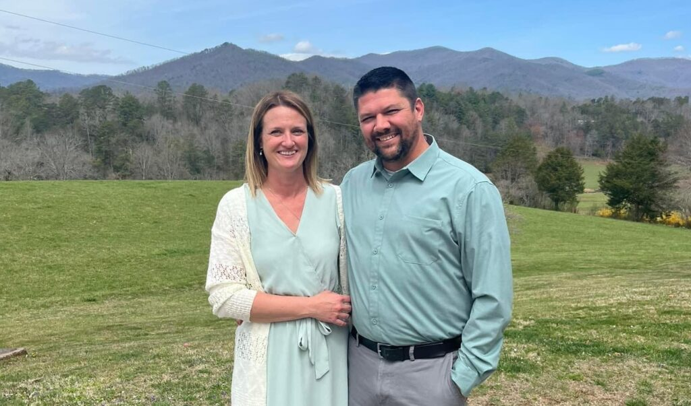

John is a graduate of Franklin High School, a N.C. Licensed Contractor, and founder of Shearl Produce, Inc. in Otto, North Carolina. He is also, a retired Highlands Firefighter and Medical Responder, former Macon County Planning Board member, former Highlands High School baseball coach, and recipient of the Highlands High School "Service to the School Award."
Danny was born in Brooklyn, New York, he moved overseas at the age of five after his parents divorce, then moved back to the US in 1990 and lived in Deltona, Florida. He graduated from Deltona High School in 1993 and attended two years at Seminole Community College and have a 6th Degree Black Belt in American Kenpo Karate. In 1998, he came to Macon County and am the owner and head instructor of Danny Antoines Martial Arts Academy. He and his wife Mary have been married for 14 years and have 15 children and 11 grandchildren. He currently serves on the CareNet and Kavod Family Non-Profit boards.

Barry moved to Franklin, NC when he was 12 years old from Alexandria, VA and graduated from Franklin High School in 1999. After high school he went straight into the workforce, eventually hired as branch manager for two different secondary financial institutions before changing careers and enrolling in BLET at SCC. After completion of BLET he was employed at Swain County Sheriffs Office from 2010-2015 where he started as a patrol deputy and was quickly promoted to patrol sergeant. In 2015 he purchased Carolina Junction Power Equipment which he currently own and operate, as well as several other businesses. He and his wife, Diedre, have been married 18 years and have three children. His goal is to help set Macon County on a path for success for years to come, looking at how to drive economic growth, capitalize on our potential as a desirable tourist destination and let that benefit our citizens and our future.
Gary graduated from Waynesville Township High School in June 1966. In October 1966, he entered the United States Army. After completing my tenure in June 1969 and serving two tours of duty in Vietnam, he entered Gardner Webb College (University) in August 1969 and graduated in May 1973. he was employed in the Kings Mountain School District for eight years as a teacher and school administrator.